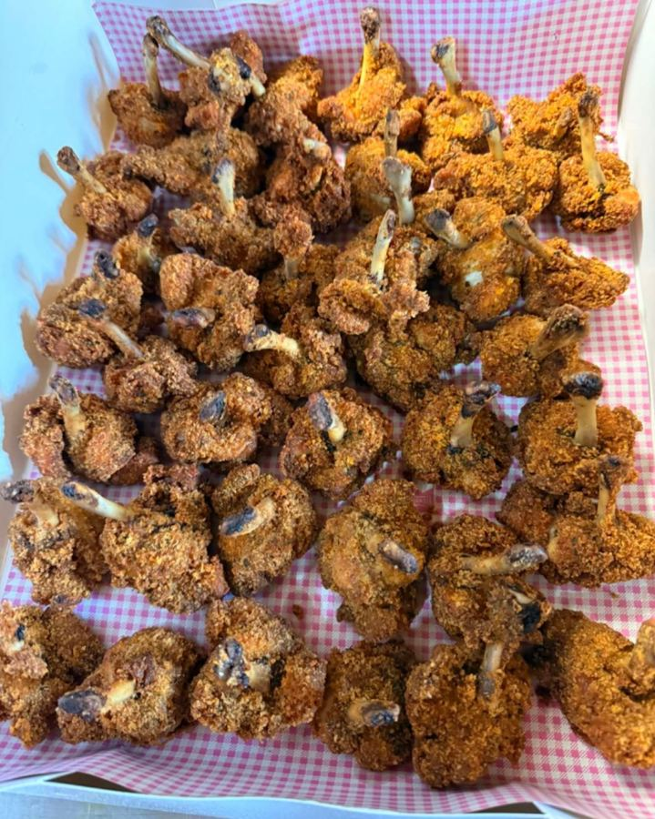
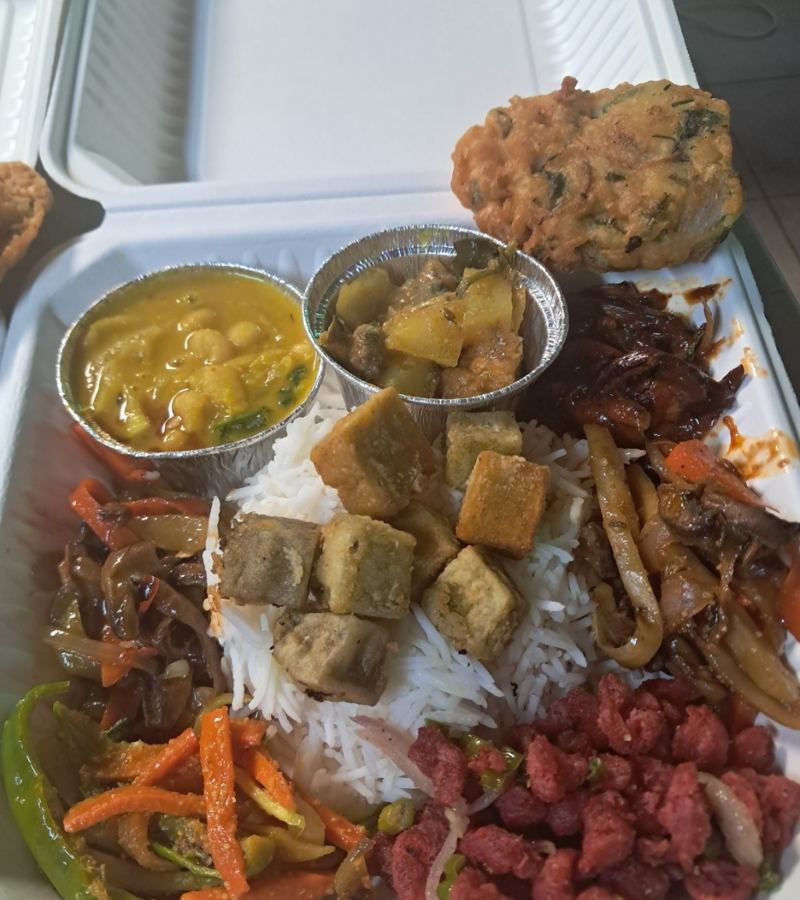
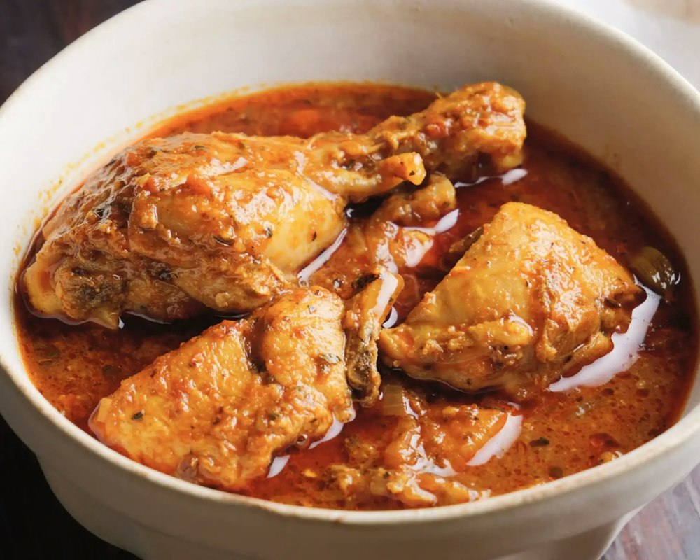

Accueil › Blog
Le blog du VindayLe briani, les box repas en entreprise, la livraison à domicile et sur la plage : tout ce qu'il faut savoir pour bien manger à plusieurs, dans l'Ouest de La Réunion et partout sur l'île.
 Cuisine mauricienne
Cuisine mauricienneChop suey poulet ou poisson : d'où vient ce plat sino-mauricien, ce qu'on y trouve et comment le servir en buffet ou en box repas, livré partout à La Réunion par un traiteur mauricien de Saint-Paul.

ParticuliersOrganiser un buffet d'anniversaire à La Réunion avec un traiteur mauricien : pilons panés, mini pizzas, briani, de 10 à 400 personnes, livré à domicile, en salle ou à la plage.
 Cuisine mauricienne
Cuisine mauricienneDholl puri et farata : d'où viennent ces deux pains mauriciens, comment on les mange et comment les servir en buffet ou en box repas, livrés partout à La Réunion par un traiteur mauricien.
 Entreprises
EntreprisesOrganiser le repas de Noël de votre entreprise à La Réunion avec un traiteur mauricien : buffet, box repas ou repas complet livré, de 10 à 400 personnes, partout sur l'île.
 Livraison
LivraisonLe Vinday, traiteur mauricien installé à Bernica, livre repas, box et buffets dans tout l'Ouest de La Réunion : Saint-Paul, Saint-Gilles, Le Port, La Possession, Saint-Leu, Trois-Bassins.
 Bons plans
Bons plansPique-nique en famille, anniversaire ou team building au bord de l'eau : comment se faire livrer un repas mauricien sur une plage de l'Ouest de La Réunion.
 Recette
RecetteRiz basmati, viande marinée, pommes de terre, épices et cuisson à l'étouffée : la recette du briani mauricien expliquée pas à pas par un traiteur de Saint-Paul.
 Particuliers
ParticuliersAnniversaire, repas de famille, soirée entre amis : faites-vous livrer briani, mine frites et carris à domicile, dès 10 repas, à Saint-Paul et partout à La Réunion.
 Événements
ÉvénementsPull Up Événements, les Missions Locales de La Réunion, le Campus des experts-comptables, Bourbon Car Industrie, Chennai Shop et de nombreuses entreprises : des organisateurs d'événements à La Réunion ont confié leurs repas au traiteur mauricien Le Vinday.

ÉvénementsMariage, fête de famille, repas d'entreprise : comment un traiteur prépare et livre un briani mauricien pour un grand nombre de convives à La Réunion.

RecettePommes de terre, épices plus douces, cuisson à l'étouffée : ce qui distingue le briani de l'île Maurice du biryani indien, et pourquoi il plaît tant à La Réunion.
 Entreprises
EntreprisesDéjeuner d'équipe, réunion, formation, chantier : comment commander des box repas et plateaux repas livrés en entreprise à Saint-Paul, Le Port, La Possession et dans tout l'Ouest.